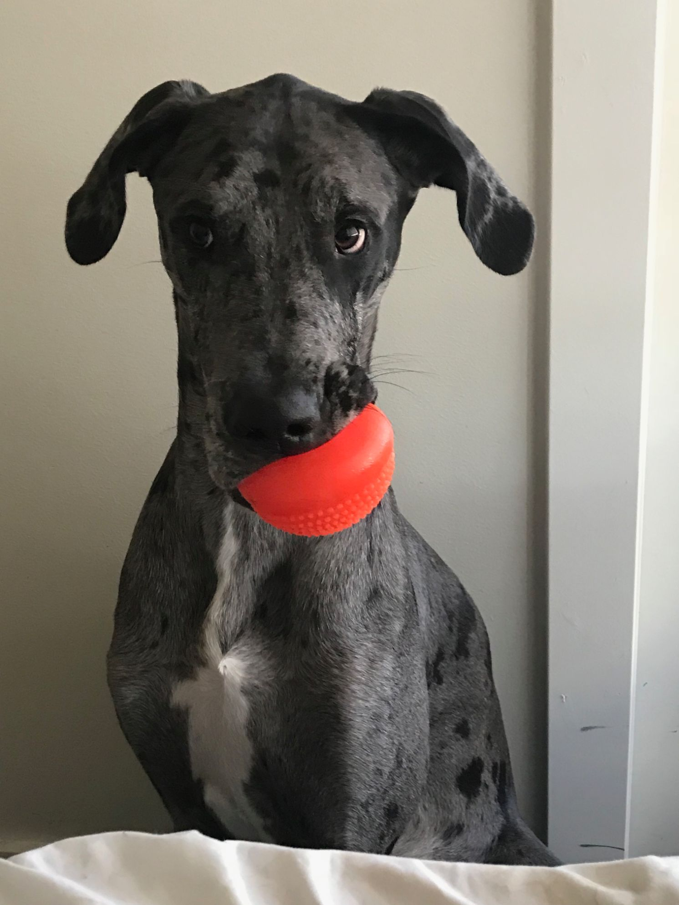
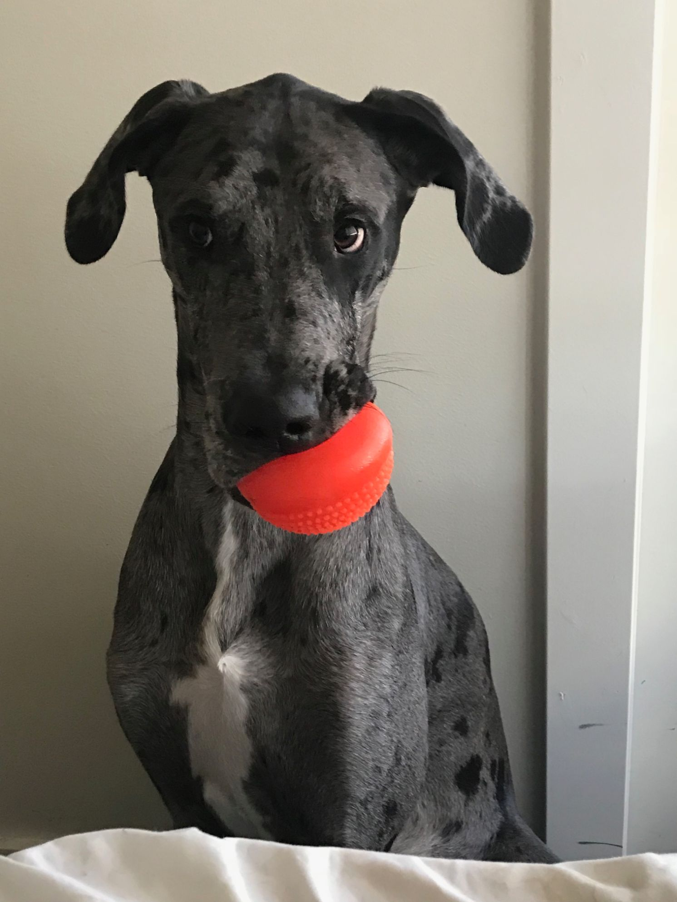

Background
Many a programmer has heard of Rubber Duck Debugging. But they do not know the power of a Debug Dog. Particularly Mowgli the Debug Dog.
Here are some interesting facts about Mowgli:

Birthday: January 2017
Gotcha Dates: March 2017
Owner: Mowgli is owned by Melissa, or perhaps Melissa is owned by Mowgli?
Breed: Great Dane
Prefered pronouns: He/Him
Size: HUUUUUGEEEEE
Weight: 110-ish lbs
As Douglas Adams once said, "One is never alone with a rubber duck." Mowgli the Debug Dog is far from a patient listener, but still will help you solve your debugging woes. Unlike a rubber duck, Mowgli is cuddly and goofy, doubling as your entertainment for the occasional times you need a break from your work (use with caution).
Endorsements
I remember the first time I met Mowgli. He looked so goofy as he stared at the code with me. I slowly explained everything and he sort of listened to my every word. The pauses were uncomfortable, but then I SAW it. I saw the error. Mowgli saved me hours of anguish!
MOWGLI KNOWS THE WAE
I was convinced Melissa would name her dog after a Pokemon.
HISSSS!!! SPIT!!!!!
Pet it.
Fur-get your struggles, follow this advice with Mowgli by your side and I’m PAWsitive you'll succeed!
If only I could bring Mowgli to Office Hours to share his debugging wisdom. But he's always with CSE 154 students in spirit!
Hi, I'm Mowgli! People call me Mowgs, Lil Potato, Cookies n' Cream, and everything in between. I'm here to help you with your homework! (Just don't let me get too close to it, or I might try to lick it).

Achievements
Being a GREEAATT DANE, Mowgli has accomplished many GREEAATT things. Many of which you probability could have never imagined...
Here are some GREEAATT accomplishments of Mowgli:
- Baby Mowgli
- Cutest newborn of UW CS department
- Best proformance in programmer-motivation contest
- Teenage Mowgli
- Best fetcher of the year
- Tallest in class
- Best potential programmer doge
- Adult Mowgli
- No. 1 in High Jump
- Face of CSE 154
 

Doggo ipsum dat tungg tho heckin angery woofer snoot. Very hand that feed shibe ur givin me a spook shooberino boofers yapper, you are doin me a concern noodle horse big ol long bois, yapper doggo vvv. Adorable doggo borkdrive floofs puggorino ur givin me a spook, you are doing me a frighten sub woofer. Shooberino I am bekom fat puggo doggo, porgo very taste wow. Borking doggo what a nice floof boofers bork clouds, borkdrive dat tungg tho tungg.